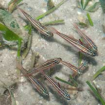
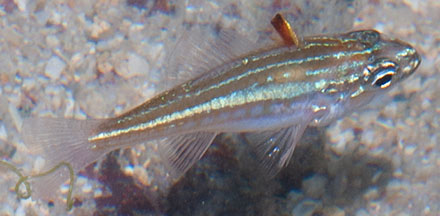
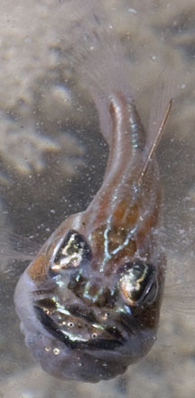
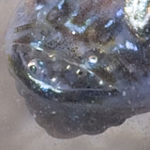
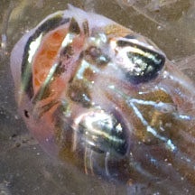
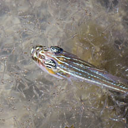
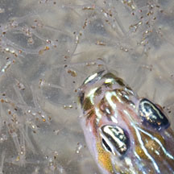
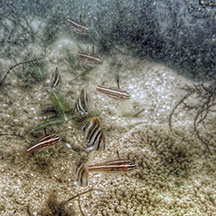
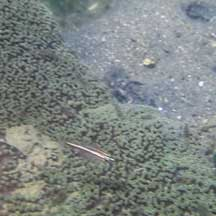

|
|
| fishes text index | photo index |
| Phylum Chordata > Subphylum Vertebrate > fishes > Family Apogonidae |
| Chequered
cardinalfish Ostorhinchus margaritophorus Family Apogonidae updated Sep 2020 Where seen? This small silvery fish is commonly seen on many of our shores, especially on the Northern shores. Often seen in small groups, in pools among seagrasses and coral rubble. It was previously known as Apogon margaritophorus. Features: Those seen about 3-4cm, grows to about 5.5cm. Body slender. On the sides, white and reddish to brownish stripes. Between two stripes are narrow vertical lines that forms a window-like or chequered pattern - like a child's drawing of an airplane, with little squares for the windows. |
 Often seen in small groups. Cyrene, May 08 |
 Window-like patterns on the sides. Pulau Hantu, Jan 06 |
| Cardinalfish babies: Cardinalfishes are mouth brooders. The fertilised egg mass is kept in the mouth until they hatch in several days' time. Usually it is the male that undertakes this task, but in some species both the male and female do this. |
|
 Brooding eggs in the mouth. Pulau Semakau, Oct 11 |
 Pulau Semakau, Oct 11  |
 Pulau Semakau, Oct 11  Releasing newly hatched babies? |
| Cardinalfish friends: According to FishBase, the fish is found in "small groups, usually sheltering near long-spined urchins or large anemones in seagrasses". On our shores, it is sometimes seen hovering near carpet anemones, but not touching the sea anemones. However, the fish has not been observed near our long-spined sea urchins. |
*Species are difficult to positively identify without close examination.
On this website, they are grouped by external features for convenience of display.
| Chequered cardinalfishes on Singapore shores |
On wildsingapore
flickr
|
| Other sightings on Singapore shores |
 Hovering near a carpet anemone. Coney Island, Jun 20 Photo shared by Richard Kuah on facebook. |
 Hovering near a carpet anemone. Pasir Ris Park, May 21 Photo shared by Richard Kuah on facebook. |
| chequered cardinals @ terumbu raya 09Feb2009 from SgBeachBum on Vimeo. |
Links
|